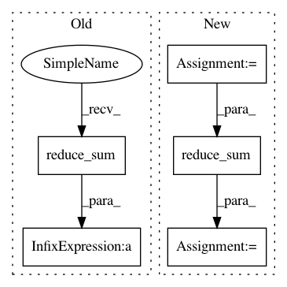

7d9d506e77585e5600b45dc41da1a731a4b30722,nn/loss.py,,sensitivity_specificity_loss,#,83
Before Change
tf.add(tf.multiply(r, tf.reduce_sum(tf.multiply(tf.square(-1 * tf.sparse_add(-1 * pred, one_hot)) \
, tf.sparse_tensor_to_dense(one_hot)),
0) / tf.sparse_reduce_sum(one_hot, 0)), \
tf.multiply((1 - r), tf.reduce_sum(tf.multiply(tf.square(-1 * tf.sparse_add(-1 * pred, one_hot)), \
one_hotB), 0) / tf.reduce_sum(one_hotB, 0))))
return SensSpec
After Change
dense_shape=[n_voxels, n_classes])
one_hot = tf.sparse_tensor_to_dense(one_hot)
// value of unity everywhere except for the previous "hot" locations
one_cold = 1 - one_hot
squared_error = tf.square(one_hot - pred)
specificity_part = tf.reduce_sum(squared_error * one_hot, 0) / tf.reduce_sum(one_hot, 0)
sensitivity_part = tf.reduce_sum(tf.multiply(squared_error, one_cold), 0) / tf.reduce_sum(one_cold, 0)
return tf.reduce_sum(r * specificity_part + (1 - r) * sensitivity_part)
In pattern: SUPERPATTERN
Frequency: 3
Non-data size: 5
Instances
Project Name: NifTK/NiftyNet
Commit Name: 7d9d506e77585e5600b45dc41da1a731a4b30722
Time: 2017-04-27
Author: z.eaton-rosen@ucl.ac.uk
File Name: nn/loss.py
Class Name:
Method Name: sensitivity_specificity_loss
Project Name: GPflow/GPflow
Commit Name: 45efebc7488818ac2e34b83f1f3f236ce97e1693
Time: 2019-09-12
Author: sergio.diaz@prowler.io
File Name: gpflow/models/sgpr.py
Class Name: SGPRUpperMixin
Method Name: upper_bound
Project Name: GPflow/GPflow
Commit Name: fb38de83a33ea5cf1a533587f0fde04dc8a9b785
Time: 2016-01-19
Author: james.hensman@gmail.com
File Name: GPflow/svgp.py
Class Name: SVGP
Method Name: build_likelihood